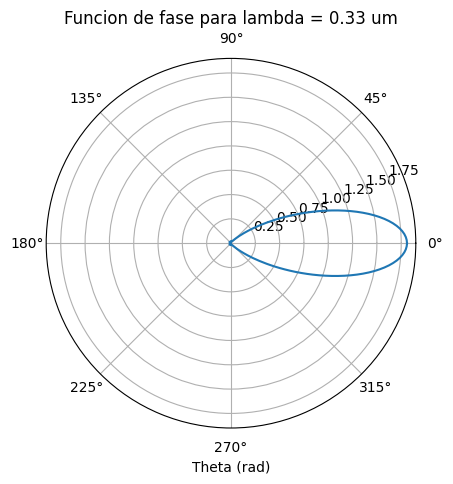
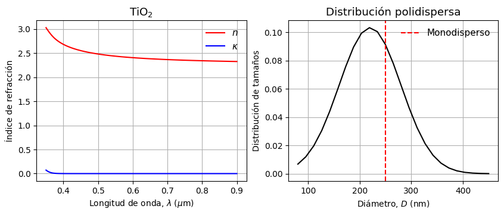
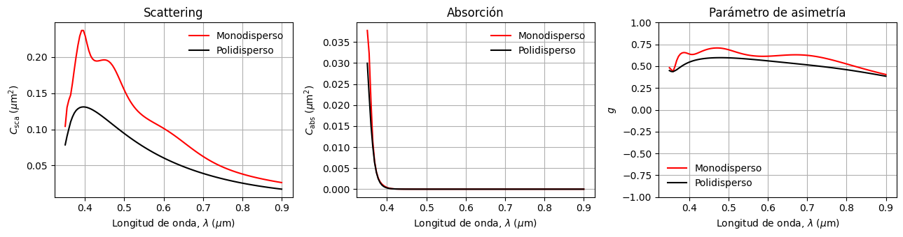
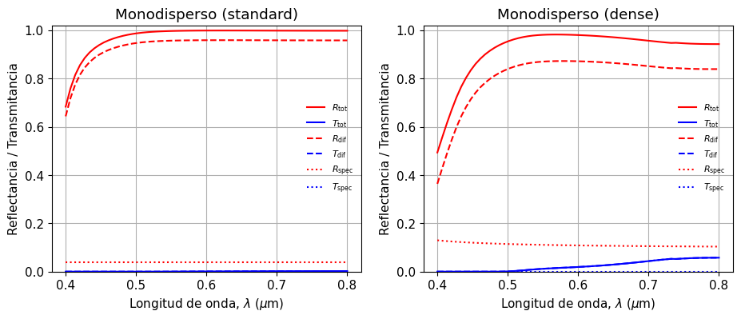

Tutorial 2 - Modelación avanzada de scattering#
Este es un tutorial para utilizar funciones avanzadas de empylib en problemas de scattering electromagnético. En particular, revisaremos:
phase_scatt_ensemblepara calcular funciones de fase de ensambles de partículas.cross_section_ensemblepara obtener secciones transversales promedio en distribuciones de tamaño.adm_spherepara estimar reflectancia y transmitancia de películas con scattering múltiple.
Trabajaremos con partículas reales de TiO\(_2\) embebidas en una matriz transparente.
Primero importamos las librerías necesarias. Usaremos ipywidgets para crear controles interactivos.
import numpy as np
import matplotlib.pyplot as plt
from ipywidgets import interact
import empylib.miescattering as mie
import empylib.rad_transfer as rt
import empylib.nklib as nk
Función de fase (phase_scatt_ensemble)#
phase_scatt_ensemble calcula la función de fase \(P_\mathrm{sca}(\theta)\) para cada longitud de onda. En la versión local actual de empylib, el ángulo se entrega como segundo argumento posicional, en radianes:
help(mie.phase_scatt_ensemble)
Help on function phase_scatt_ensemble in module empylib.miescattering:
phase_scatt_ensemble()
Calculate the scattering phase function for multiple hard-spheres under unpolarized light.
The intensity is normalized such that the integral is equal to qsca
Parameters:
wavelength : ndarray or float
Wavelengtgh (microns)
Nh : ndarray or float
Complex refractive index of host. If ndarray, len(Nh) == len(wavelength)
Np (float, 1darray or list): Complex refractive index of each
shell layer. Np.shape[1] == len(D).
Options are:
float: solid sphere and constant refractive index
1darray: solid sphere and spectral refractive index (len = wavelength)
list: multilayered sphere (with both constant or spectral refractive indexes)
D : float, _np.ndarray or list
Diameter of the spheres. Use float for monodisperse, or array for polydisperse.
if multilayer sphere, use list of floats (monodisperse) or arrays (polydisperse).
fv: float
Filling fraction. Defaul 0.0
size_dist: ndarray
Diameter density distribution. len(size_dist) == len(D)
theta : float or ndarray (optional)
Scatttering angle (radians). Default None
nmax : int (optional)
Number of mie scattering coefficients. Default None
coeff_cache : list[(an, bn)], optional
Optional precomputed Mie coefficients per size bin. When provided,
phase-function evaluation reuses coefficients and avoids recomputing
them inside scatter_amplitude for each bin.
as_ndarray : bool (optional)
True if user wants the output as ndarray. Otherwise, the output is a pd.DataFrame.
Default False
check_inputs : bool (optional)
If True, check mie scattering inputs. Default True
effective_medium : bool (optional)
If True, compute the effective refractive index of the host using Bruggeman EMT.
Default False
dependent_scatt : bool (optional)
If True, include structure factor in phase function calculation. Default False
Returns:
phase_fun: the scattering phase function (as pd.DataFrame or ndarray)
Definimos un material particulado de referencia. Usaremos esferas de TiO\(_2\) en una matriz transparente con índice de refracción \(N_h=1.5\).
lam = np.linspace(0.25, 1.0, 100) # espectro de longitudes de onda (um)
theta = np.linspace(0, 2*np.pi, 361) # ángulos para función de fase (rad)
Nh = 1.5 # índice de refracción de la matriz transparente
Np = nk.TiO2(lam) # índice de refracción de las partículas}
D_mono = 0.25 # diámetro (um)
---------------------------------------------------------------------------
gaierror Traceback (most recent call last)
File ~/miniconda3/lib/python3.11/site-packages/urllib3/connection.py:174, in HTTPConnection._new_conn(self)
173 try:
--> 174 conn = connection.create_connection(
175 (self._dns_host, self.port), self.timeout, **extra_kw
176 )
178 except SocketTimeout:
File ~/miniconda3/lib/python3.11/site-packages/urllib3/util/connection.py:72, in create_connection(address, timeout, source_address, socket_options)
68 return six.raise_from(
69 LocationParseError(u"'%s', label empty or too long" % host), None
70 )
---> 72 for res in socket.getaddrinfo(host, port, family, socket.SOCK_STREAM):
73 af, socktype, proto, canonname, sa = res
File ~/miniconda3/lib/python3.11/socket.py:962, in getaddrinfo(host, port, family, type, proto, flags)
961 addrlist = []
--> 962 for res in _socket.getaddrinfo(host, port, family, type, proto, flags):
963 af, socktype, proto, canonname, sa = res
gaierror: [Errno -3] Temporary failure in name resolution
During handling of the above exception, another exception occurred:
NewConnectionError Traceback (most recent call last)
File ~/miniconda3/lib/python3.11/site-packages/urllib3/connectionpool.py:716, in HTTPConnectionPool.urlopen(self, method, url, body, headers, retries, redirect, assert_same_host, timeout, pool_timeout, release_conn, chunked, body_pos, **response_kw)
715 # Make the request on the httplib connection object.
--> 716 httplib_response = self._make_request(
717 conn,
718 method,
719 url,
720 timeout=timeout_obj,
721 body=body,
722 headers=headers,
723 chunked=chunked,
724 )
726 # If we're going to release the connection in ``finally:``, then
727 # the response doesn't need to know about the connection. Otherwise
728 # it will also try to release it and we'll have a double-release
729 # mess.
File ~/miniconda3/lib/python3.11/site-packages/urllib3/connectionpool.py:404, in HTTPConnectionPool._make_request(self, conn, method, url, timeout, chunked, **httplib_request_kw)
403 try:
--> 404 self._validate_conn(conn)
405 except (SocketTimeout, BaseSSLError) as e:
406 # Py2 raises this as a BaseSSLError, Py3 raises it as socket timeout.
File ~/miniconda3/lib/python3.11/site-packages/urllib3/connectionpool.py:1061, in HTTPSConnectionPool._validate_conn(self, conn)
1060 if not getattr(conn, "sock", None): # AppEngine might not have `.sock`
-> 1061 conn.connect()
1063 if not conn.is_verified:
File ~/miniconda3/lib/python3.11/site-packages/urllib3/connection.py:363, in HTTPSConnection.connect(self)
361 def connect(self):
362 # Add certificate verification
--> 363 self.sock = conn = self._new_conn()
364 hostname = self.host
File ~/miniconda3/lib/python3.11/site-packages/urllib3/connection.py:186, in HTTPConnection._new_conn(self)
185 except SocketError as e:
--> 186 raise NewConnectionError(
187 self, "Failed to establish a new connection: %s" % e
188 )
190 return conn
NewConnectionError: <urllib3.connection.HTTPSConnection object at 0x7f0541330590>: Failed to establish a new connection: [Errno -3] Temporary failure in name resolution
During handling of the above exception, another exception occurred:
MaxRetryError Traceback (most recent call last)
File ~/miniconda3/lib/python3.11/site-packages/requests/adapters.py:486, in HTTPAdapter.send(self, request, stream, timeout, verify, cert, proxies)
485 try:
--> 486 resp = conn.urlopen(
487 method=request.method,
488 url=url,
489 body=request.body,
490 headers=request.headers,
491 redirect=False,
492 assert_same_host=False,
493 preload_content=False,
494 decode_content=False,
495 retries=self.max_retries,
496 timeout=timeout,
497 chunked=chunked,
498 )
500 except (ProtocolError, OSError) as err:
File ~/miniconda3/lib/python3.11/site-packages/urllib3/connectionpool.py:802, in HTTPConnectionPool.urlopen(self, method, url, body, headers, retries, redirect, assert_same_host, timeout, pool_timeout, release_conn, chunked, body_pos, **response_kw)
800 e = ProtocolError("Connection aborted.", e)
--> 802 retries = retries.increment(
803 method, url, error=e, _pool=self, _stacktrace=sys.exc_info()[2]
804 )
805 retries.sleep()
File ~/miniconda3/lib/python3.11/site-packages/urllib3/util/retry.py:594, in Retry.increment(self, method, url, response, error, _pool, _stacktrace)
593 if new_retry.is_exhausted():
--> 594 raise MaxRetryError(_pool, url, error or ResponseError(cause))
596 log.debug("Incremented Retry for (url='%s'): %r", url, new_retry)
MaxRetryError: HTTPSConnectionPool(host='refractiveindex.info', port=443): Max retries exceeded with url: /database/data/main/TiO2/nk/Siefke.yml (Caused by NewConnectionError('<urllib3.connection.HTTPSConnection object at 0x7f0541330590>: Failed to establish a new connection: [Errno -3] Temporary failure in name resolution'))
During handling of the above exception, another exception occurred:
ConnectionError Traceback (most recent call last)
Cell In[4], line 5
2 theta = np.linspace(0, 2*np.pi, 361) # ángulos para función de fase (rad)
4 Nh = 1.5 # índice de refracción de la matriz transparente
----> 5 Np = nk.TiO2(lam) # índice de refracción de las partículas}
6 D_mono = 0.25
File /mnt/c/Users/frami/OneDrive - Universidad Adolfo Ibanez/ComputerCodes/Python/custom_packages/empylib_proy/empylib/nklib.py:2163, in <lambda>(wavelength)
2160 BaF2 = lambda wavelength: get_ri_info(wavelength, 'main', 'BaF2', 'Querry')[0]
2162 # refractive index of TiO2
-> 2163 TiO2 = lambda wavelength: get_ri_info(wavelength,'main','TiO2','Siefke')[0]
2165 # refractive index of BiVO4 monoclinic (a axis)
2166 BiVO4_mono_a = lambda wavelength: get_nkfile(wavelength, 'BiVO4_a-c_Zhao2011', get_from_local_path = True)[0]
File /mnt/c/Users/frami/OneDrive - Universidad Adolfo Ibanez/ComputerCodes/Python/custom_packages/empylib_proy/empylib/nklib.py:222, in get_ri_info(wavelength, shelf, book, page, extrapolate)
197 def get_ri_info(wavelength, shelf, book, page, *, extrapolate='flat'):
198 '''
199 Extract refractive index from refractiveindex.info database. This code
200 uses the refidx package from Bejamin Vial (https://gitlab.com/benvial/refidx)
(...)
220 Original tabulated data from file
221 '''
--> 222 nk_df = ri_info_data(shelf,book,page)
223 MaterialName = book + '_' + page
225 return _process_nk_data(wavelength, nk_df, MaterialName, extrapolate)
File /mnt/c/Users/frami/OneDrive - Universidad Adolfo Ibanez/ComputerCodes/Python/custom_packages/empylib_proy/empylib/nklib.py:181, in ri_info_data(shelf, book, page)
178 url = url_root + shelf + '/' + book + '/nk/' + page + '.yml'
180 # Download YAML content
--> 181 response = _requests.get(url)
182 response.raise_for_status()
184 # Parse YAML content
File ~/miniconda3/lib/python3.11/site-packages/requests/api.py:73, in get(url, params, **kwargs)
62 def get(url, params=None, **kwargs):
63 r"""Sends a GET request.
64
65 :param url: URL for the new :class:`Request` object.
(...)
70 :rtype: requests.Response
71 """
---> 73 return request("get", url, params=params, **kwargs)
File ~/miniconda3/lib/python3.11/site-packages/requests/api.py:59, in request(method, url, **kwargs)
55 # By using the 'with' statement we are sure the session is closed, thus we
56 # avoid leaving sockets open which can trigger a ResourceWarning in some
57 # cases, and look like a memory leak in others.
58 with sessions.Session() as session:
---> 59 return session.request(method=method, url=url, **kwargs)
File ~/miniconda3/lib/python3.11/site-packages/requests/sessions.py:589, in Session.request(self, method, url, params, data, headers, cookies, files, auth, timeout, allow_redirects, proxies, hooks, stream, verify, cert, json)
584 send_kwargs = {
585 "timeout": timeout,
586 "allow_redirects": allow_redirects,
587 }
588 send_kwargs.update(settings)
--> 589 resp = self.send(prep, **send_kwargs)
591 return resp
File ~/miniconda3/lib/python3.11/site-packages/requests/sessions.py:703, in Session.send(self, request, **kwargs)
700 start = preferred_clock()
702 # Send the request
--> 703 r = adapter.send(request, **kwargs)
705 # Total elapsed time of the request (approximately)
706 elapsed = preferred_clock() - start
File ~/miniconda3/lib/python3.11/site-packages/requests/adapters.py:519, in HTTPAdapter.send(self, request, stream, timeout, verify, cert, proxies)
515 if isinstance(e.reason, _SSLError):
516 # This branch is for urllib3 v1.22 and later.
517 raise SSLError(e, request=request)
--> 519 raise ConnectionError(e, request=request)
521 except ClosedPoolError as e:
522 raise ConnectionError(e, request=request)
ConnectionError: HTTPSConnectionPool(host='refractiveindex.info', port=443): Max retries exceeded with url: /database/data/main/TiO2/nk/Siefke.yml (Caused by NewConnectionError('<urllib3.connection.HTTPSConnection object at 0x7f0541330590>: Failed to establish a new connection: [Errno -3] Temporary failure in name resolution'))
Por defecto, la salida es un pd.DataFrame. Las filas corresponden a ángulos de scattering en radianes y las columnas a longitudes de onda. Para trabajar como en numpy, usamos .to_numpy() y obtenemos un arreglo con forma (n_theta, n_lambda).
phase_mono = mie.phase_scatt_ensemble(lam, theta, Nh, Np, D_mono)
print('Tipo de variable:', type(phase_mono))
print('Tamaño del DataFrame:', phase_mono.shape)
phase_mono.head()
Tipo de variable: <class 'pandas.core.frame.DataFrame'>
Tamaño del DataFrame: (361, 100)
| 0.250000 | 0.257576 | 0.265152 | 0.272727 | 0.280303 | 0.287879 | 0.295455 | 0.303030 | 0.310606 | 0.318182 | ... | 0.931818 | 0.939394 | 0.946970 | 0.954545 | 0.962121 | 0.969697 | 0.977273 | 0.984848 | 0.992424 | 1.000000 | |
|---|---|---|---|---|---|---|---|---|---|---|---|---|---|---|---|---|---|---|---|---|---|
| Theta (rad) | |||||||||||||||||||||
| 0.000000 | 3.085264 | 2.941662 | 2.802571 | 2.666047 | 2.534292 | 2.412503 | 2.303832 | 2.205371 | 2.107706 | 1.987980 | ... | 0.130012 | 0.125243 | 0.120693 | 0.116350 | 0.112201 | 0.108235 | 0.104443 | 0.100814 | 0.097340 | 0.094013 |
| 0.017453 | 3.077992 | 2.935074 | 2.796601 | 2.660643 | 2.529399 | 2.408061 | 2.299777 | 2.201654 | 2.104297 | 1.984884 | ... | 0.129981 | 0.125214 | 0.120665 | 0.116323 | 0.112175 | 0.108211 | 0.104419 | 0.100791 | 0.097318 | 0.093992 |
| 0.034907 | 3.056265 | 2.915387 | 2.778759 | 2.644489 | 2.514774 | 2.394779 | 2.287651 | 2.190534 | 2.094103 | 1.975624 | ... | 0.129890 | 0.125126 | 0.120582 | 0.116243 | 0.112098 | 0.108137 | 0.104348 | 0.100723 | 0.097253 | 0.093929 |
| 0.052360 | 3.020356 | 2.882838 | 2.749251 | 2.617763 | 2.490568 | 2.372791 | 2.267569 | 2.172116 | 2.077212 | 1.960278 | ... | 0.129738 | 0.124981 | 0.120442 | 0.116109 | 0.111970 | 0.108014 | 0.104230 | 0.100610 | 0.097144 | 0.093824 |
| 0.069813 | 2.970715 | 2.837815 | 2.708410 | 2.580755 | 2.457034 | 2.342313 | 2.239724 | 2.146568 | 2.053774 | 1.938977 | ... | 0.129526 | 0.124778 | 0.120248 | 0.115922 | 0.111791 | 0.107842 | 0.104065 | 0.100452 | 0.096992 | 0.093678 |
5 rows × 100 columns
Para extraer la distribución de fase para una longitud de onda desde el DataFrame, tenemos alternativas:
phase_mono_np.iloc[:,idx], dondeidxes el índice de la columna correspondiente a la longitud de onda deseada.phase_mono_np[lam[idx]], dondelam[idx]es la longitud de onda seleccionada. Esta opción es más directa, pero requiere que el índice delDataFrameesté correctamente configurado con las longitudes de onda.
idx = 10 # colúmna de la longitud de onda seleccionada
lam_select = lam[idx] # longitud de onda seleccionada
Psca_at_lam = phase_mono[lam_select] # función de fase para la longitud de onda seleccionada
Para graficar, podemos usar la función plot integrada en el pandas.DataFrame, que es más directa y mantiene la asociación entre los índices y los datos. El índice theta ya fue definido en radianes, por lo que se puede usar directamente como coordenada angular del gráfico polar.
fig, ax = plt.subplots(subplot_kw={"projection": "polar"})
Psca_at_lam.plot(ax = ax)
ax.set_title(f'Funcion de fase para lambda = {lam_select:.2f} um')
ax.grid()

Nota: Para usuarios que se sientan más cómodos con
numpy, se sugiere hacer la conversión conphase_mono_np = phase_mono.to_numpy()y luego usar índices numéricos para acceder a los datos y realizar las operaciones de forma tradicional.
En el siguiente ejemplo, el panel izquierdo muestra la sección transversal de scattering \(C_\mathrm{sca}\) y el panel derecho muestra \(P_\mathrm{sca}(\theta)\) en coordenadas polares. El control interactivo permite explorar cómo cambia la función de fase con la longitud de onda.
Cabs_mono, Csca_mono, g_mono = mie.scatter_efficiency(lam, Nh, Np, D_mono)
def plot_phase_scattering(lam0=0.55):
idx = np.argmin(np.abs(lam - lam0)) # índice de la longitud de onda más cercana a lam0
Psca = phase_mono[lam[idx]] # función de fase para la longitud de onda seleccionada
fig, ax = plt.subplots(1, 2)
fig.set_size_inches(10, 4)
plt.rcParams['font.size'] = '11'
ax[0].plot(lam, Csca_mono, '-k')
ax[0].axvline(lam[idx], color='r', ls='--', label=r'$\lambda$ = %.2f $\mu$m' % lam[idx])
ax[0].set_xlabel('Longitud de onda, $\lambda$ ($\mu$m)')
ax[0].set_ylabel(r'$C_\mathrm{sca}$ ($\mu$m$^2$)')
ax[0].set_title('Sección transversal')
ax[0].legend(frameon=False)
ax[0].grid()
ax[1].remove()
ax_polar = fig.add_subplot(1, 2, 2, projection='polar')
Psca.plot(ax=ax_polar, color='k')
ax_polar.grid()
ax_polar.set_title(r'$P_\mathrm{sca}(\theta)$', va='bottom')
ax_polar.set_theta_direction(-1)
plt.show()
@interact(lam0=(float(lam.min()), float(lam.max()), 0.01))
def update_phase_scattering(lam0=0.35):
plot_phase_scattering(lam0)
Secciones transversales de un conjunto de esferas (cross_section_ensemble)#
La función cross_section_ensemble calcula \(C_\mathrm{abs}\), \(C_\mathrm{sca}\) y \(g\) para casos monodispersos y polidispersos considerando efectos de interferencia entre partículas y medio efectivo circundante.
help(mie.cross_section_ensemble)
Help on function cross_section_ensemble in module empylib.miescattering:
cross_section_ensemble()
Compute size-averaged scattering/absorption cross sections and asymmetry parameter
for an ensemble of hard spheres under the independent-scattering assumption.
Not valid for metallic spheres or high volume fractions where near-field coupling
is important.
Parameters
----------
wavelength : array-like, shape (nλ,)
Wavelengths [µm], strictly positive.
Nh : float or array-like (nλ,)
Host refractive index (can be complex). If array-like, length must equal len(wavelength).
Np : float, 1darray or list
Complex refractive index of each shell layer. Np.shape[1] == len(D).
Options are:
- float: solid sphere and constant refractive index
- 1darray: solid sphere and spectral refractive index (len = wavelength)
- list: multilayered sphere (with both constant or spectral refractive indexes)
D : float, np.ndarray or list
Diameter of the spheres. Use float for monodisperse, or array for polydisperse.
if multilayer sphere, use list of floats (monodisperse) or list of arrays (polydisperse).
fv : float, optional
Particle volume fraction in (0, 1). Used only to compute an effective medium Nh via
`nk.emt_brugg(fv, Np, Nh)`.
size_dist : array-like (nD,), optional
Diameter's size distribution (polydisperse case). Size must be equal to D. Sum must be 1
within tolerance; will be renormalized if slightly off.
effective_medium : bool, optional
Whether to compute an effective host refractive index via Bruggeman EMT (default: True)
dependent_scatt : bool, optional
Whether to include dependent scattering effects via Percus-Yevick structure factor
(default: False; not recommended for metallic spheres or high fv)
phase_function : bool, optional
If True, also return the phase function DataFrame (default: False)
nmax : int, optional
Number of mie scattering coefficients (default: None, automatic).
check_inputs : bool, optional
Whether to check mie inputs (default: True)
n_theta : int, optional
Number of scattering angles (default: 100).
Returns
-------
cabs_av : _np.ndarray, shape (nλ,)
Size-averaged scattering cross section per particle [µm²].
csca_av : _np.ndarray, shape (nλ,)
Size-averaged absorption cross section per particle [µm²].
g_av : _np.ndarray, shape (nλ,)
Size-averaged asymmetry parameter (⟨cosθ⟩).
phase_fun_df : pd.DataFrame or None
Scattering phase function (if `phase_function=True`), with index=θ° and columns=λ.
Otherwise, None.
Los primeros 4 primeros argumentos (wavelength, Nh, Np, D) son obligatorios y se utilizan para esferas monodispersas (sólida o multicapas). En el caso de esferas multicapas, D y Np deben ser una lista lista ([D1, D2, ..., Dn] y [Np1, Np2, ..., Npn], respectivamente) de tamaño (nD,), donde nD es el número de capas. Cada elemento de Np puede ser un número complejo (índice de refracción fijo) o un arreglo de tamaño (n_lambda,) (índice de refracción dependiente de la longitud de onda).
Para scattering de múltiples esferas con polidispersión, el argumento size_dist es obligatorio y controla la distribución de tamaños. En ese caso, D y size_dist deben ser arreglos de tamaño (n,) con los diámetros y distribución de tamaño, respectivamente (ver ejemplo).
La llamada oficial devuelve siempre cuatro objetos: Cabs, Csca, g y phase_fun. Si phase_function=False, el cuarto objeto es None; si phase_function=True, el cuarto objeto es un pd.DataFrame con la función de fase.
La función utiliza dos aproximaciones para corregir los efectos de concentración y interferencia entre partículas (scattering denso):
effective_medium(Falsepor defecto): Incluye el efecto de la concentración de partículas en el medio circundante. SiTrue, se calcula un índice de refracción efectivo para el medio circundante usando la fórmula de Maxwell-Garnett, y se considera este índice en el cálculo de las secciones transversales.dependent_scatt(Falsepor defecto): Considera efectos de interferencia entre partículas (scattering coherente). SiTrue, incluye la función de estructura de Percus-Yevick para esferas sólidas, lo que afecta el cálculo de las secciones transversales al considerar la distribución espacial de las partículas.
Tomando el ejemplo anterior, analizaremos los parámetros de scattering en el caso monodisperso y polidisperso, considerando una concentración de 10% v/v.
Nh = 1.5 # índice de refracción de la matriz transparente
Np = nk.TiO2(lam) # índice de refracción de las partículas
fv = 0.1 # fracción de volumen de partículas
# caso monodisperso
D_mono = 0.25 # diámetro (um)
# caso polidisperso
D_poly = np.linspace(0.08, 0.45, 25) # rango de diámetros (um)
size_dist = np.exp(-0.5*((D_poly - 0.22)/0.06)**2) # distribución de tamaños (gaussiana)
size_dist = size_dist/np.sum(size_dist) # normalización de la distribución
Graficamos primero el índice de refracción del TiO\(_2\) junto con la distribución de tamaño de las partículas.
fig, ax = plt.subplots(1, 2)
fig.set_size_inches(10, 3.5)
plt.rcParams['font.size'] = '11'
ax[0].plot(lam, Np.real, '-r', label='$n$')
ax[0].plot(lam, Np.imag, '-b', label='$\kappa$')
ax[0].set_xlabel('Longitud de onda, $\lambda$ ($\mu$m)')
ax[0].set_ylabel('Índice de refracción')
ax[0].set_title('TiO$_2$')
ax[0].legend(frameon=False)
ax[0].grid()
ax[1].plot(D_poly*1E3, size_dist, '-k')
ax[1].axvline(D_mono*1E3, color='r', ls='--', label='Monodisperso')
ax[1].set_xlabel('Diámetro, $D$ (nm)')
ax[1].set_ylabel('Distribución de tamaños')
ax[1].set_title('Distribución polidispersa')
ax[1].legend(frameon=False)
ax[1].grid()
plt.show()

# simulación caso monodisperso
Cabs_mono, Csca_mono, g_mono, phase_mono = mie.cross_section_ensemble(
lam, Nh, Np, D_mono, # argumentos principales
fv = fv, # fracción de volumen de partículas
phase_function=True, # Pedimos función de fase
effective_medium=True, # Consideramos medio efectivo
)
# simulación caso polidisperso
Cabs_poly, Csca_poly, g_poly, phase_poly = mie.cross_section_ensemble(
lam, Nh, Np, D_poly, # argumentos principales
fv = fv, # fracción de volumen de partículas
size_dist=size_dist, # Distribución de tamaños
phase_function=True, # Pedimos función de fase
effective_medium=True, # Consideramos medio efectivo
dependent_scatt=True, # Consideramos effectos de scattering dependiente (interferencia)
)
# gráfico de los rseultados
fig, ax = plt.subplots(1, 3)
fig.set_size_inches(13, 3.5)
plt.rcParams['font.size'] = '10'
ax[0].plot(lam, Csca_mono, '-r', label='Monodisperso')
ax[0].plot(lam, Csca_poly, '-k', label='Polidisperso')
ax[0].set_ylabel(r'$C_\mathrm{sca}$ ($\mu$m$^2$)')
ax[1].plot(lam, Cabs_mono, '-r', label='Monodisperso')
ax[1].plot(lam, Cabs_poly, '-k', label='Polidisperso')
ax[1].set_ylabel(r'$C_\mathrm{abs}$ ($\mu$m$^2$)')
ax[2].plot(lam, g_mono, '-r', label='Monodisperso')
ax[2].plot(lam, g_poly, '-k', label='Polidisperso')
ax[2].set_ylabel(r'$g$')
for i in range(3):
ax[i].set_xlabel('Longitud de onda, $\lambda$ ($\mu$m)')
ax[i].grid()
ax[i].legend(frameon=False)
ax[0].set_title('Scattering')
ax[1].set_title('Absorción')
ax[2].set_title('Parámetro de asimetría')
ax[2].set_ylim(-1, 1)
plt.tight_layout()
plt.show()

Transferencia radiativa con efectos de scattering coherente (adm_sphere)#
La función adm_sphere también se puede utilizar para modelos avanzados de transferencia radiativa considerando efectos de scattering coherente y medio efectivo. En este caso, al igual que en cross_section_ensemble, se pueden activar las opciones effective_medium y dependent_scatt para incluir estos efectos en el cálculo de reflectancia y transmitancia de películas con partículas dispersas.
El argumento phase_function se utiliza para determinar el tipo de modelo para la función de fase:
Si es
False(valor por defecto), se utiliza el modelo de Henyey-Greenstein, una aproximación basada en el parámetro de asimentría \(g\).(1)#\[\begin{equation} P(\theta) = \frac{1 - g^2}{(1 + g^2 - 2g\cos\theta)^{3/2}} \end{equation}\]Si
True, se utiliza la función de fase calculada porphase_scatt_ensemble, lo que permite un modelado más preciso del scattering, especialmente útil para medios densos.
En este ejemplo, consideraremos un filme de espesor \(t_\mathrm{film} = 1\) mm con partículas de dióxido de titanio (TiO\(_2\)) monodispersas en una matriz transparente (\(N_h = 1.5\)). Compararemos la simulación tradicional (sin efectos de scattering denso) con una simulación que incluye estos efectos, utilizando la función de fase completa.
lam_rt = np.linspace(0.4, 0.8, 60)
Np_rt = nk.TiO2(lam_rt)
tfilm = 1.0 # espesor de la película (mm)
fv = 0.55
adm_mono_std = rt.adm_sphere(lam_rt, Nh, Np_rt, D_mono, fv, tfilm)
adm_mono_dns = rt.adm_sphere(lam_rt, Nh, Np_rt, D_mono, fv, tfilm,
use_phase_fun=True,
effective_medium=True,
dependent_scatt=True,
)
fig, ax = plt.subplots(1, 2)
fig.set_size_inches(11, 4)
plt.rcParams['font.size'] = '11'
for axis, adm_case, title in zip(ax, [adm_mono_std, adm_mono_dns], ['Monodisperso (standard)', 'Monodisperso (dense)']):
axis.plot(lam_rt, adm_case['Rtot'], '-r', label='$R_\mathrm{tot}$')
axis.plot(lam_rt, adm_case['Ttot'], '-b', label='$T_\mathrm{tot}$')
axis.plot(lam_rt, adm_case['Rdif'], '--r', label='$R_\mathrm{dif}$')
axis.plot(lam_rt, adm_case['Tdif'], '--b', label='$T_\mathrm{dif}$')
axis.plot(lam_rt, adm_case['Rspec'], ':r', label='$R_\mathrm{spec}$')
axis.plot(lam_rt, adm_case['Tspec'], ':b', label='$T_\mathrm{spec}$')
axis.set_title(title)
axis.set_xlabel('Longitud de onda, $\lambda$ ($\mu$m)')
axis.set_ylabel('Reflectancia / Transmitancia')
axis.set_ylim(0, 1.02)
axis.grid()
axis.legend(frameon=False, fontsize=8)
plt.show()

En resumen, phase_scatt_ensemble describe la distribución angular del scattering, cross_section_ensemble entrega propiedades promedio del conjunto de esferas y adm_sphere conecta esas propiedades con la respuesta radiativa de una película de espesor finito.
Para fracciones de volumen más altas, los argumentos dependent_scatt=True y effective_medium=True permiten incorporar correcciones adicionales. Estas opciones deben usarse con cuidado, ya que representan supuestos físicos más específicos sobre la interacción entre partículas.